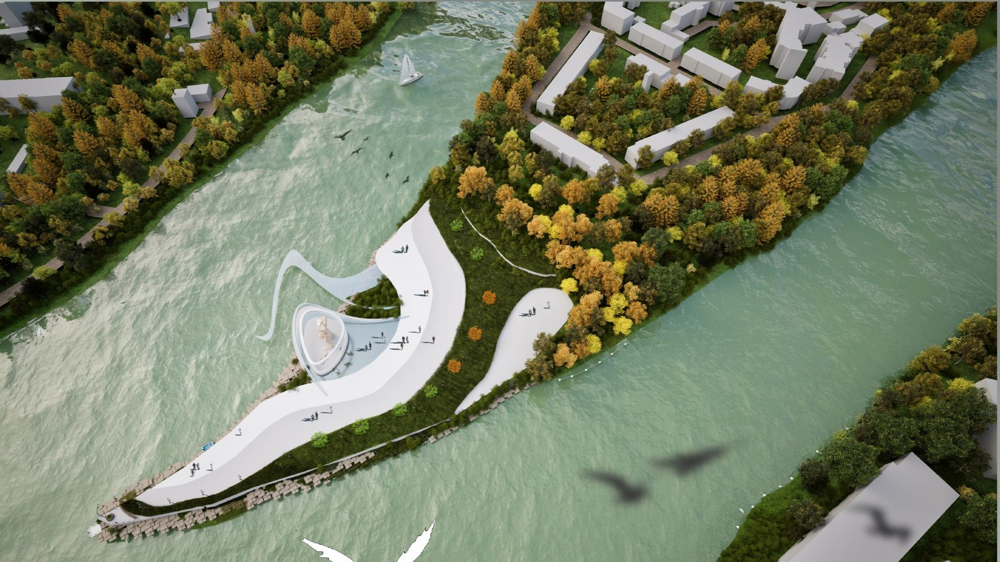
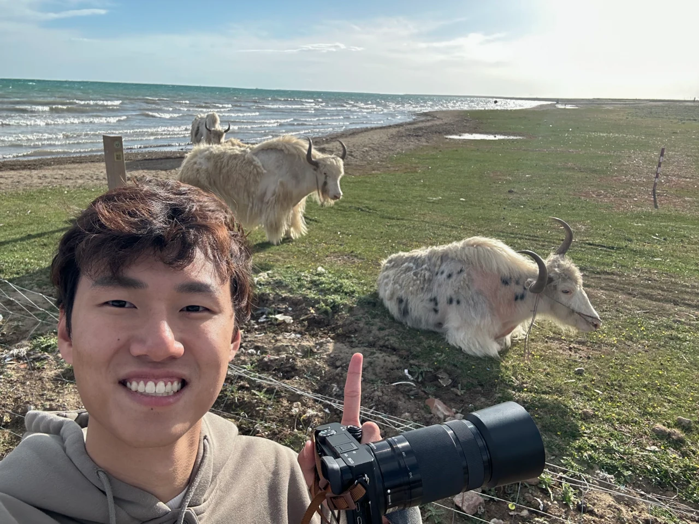

01 — PHOTOGRAPHY
Traces of Silence
An Aesthetic Journey through Everyday Places
墙面、庭院与旧物。
日常场所里，时间留下的痕迹。


汪鼎翊 / Draven
PHOTOGRAPHY · SPATIAL DESIGN · VISUAL STUDIES
WANG DINGYI / DRAVEN
A CLOSER LOOK
Photography · Spatial design
01 — PHOTOGRAPHY
An Aesthetic Journey through Everyday Places
墙面、庭院与旧物。
日常场所里，时间留下的痕迹。
02 — PHOTOGRAPHY

03 — SPATIAL DESIGN
Bridging the Urban Divide.
Regeneration of Wolne Tory in Poznań.

Landscape design · 阶段方案
THE COMPLETE COLLECTION
10 collections.
摄影、空间设计与视觉研究。
停留片刻，预览作品；点击查看完整系列。
Photography
An Aesthetic Journey through Everyday Places
36 pages
Landscape design
A small public garden inspired by Minnan cultural forms
1 page
Photography
Photography · Poznań
22 pagesUrban regeneration
Bridging the Urban Divide
40 pages
Analog photography
My first photography with an analog camera
20 pages
Photo diary
Photography & everyday life
122 pages
Visual research
Images, fragments, connections
1 page
Image study
Reference & response
1 page
Spatial design
A public space design along the Warta River
9 pages
Visual studies
Light, atmosphere & moving image
3 pagesABOUT
Draven / Wang Dingyi

我关注工业与文化遗产中的记忆如何被保留，并在当代生活中获得新生。以城市更新与公共艺术为出发点，我尝试通过摄影、影像、模型与数字媒体艺术，探索空间、记忆与人的关系，以及艺术表达的更多可能。